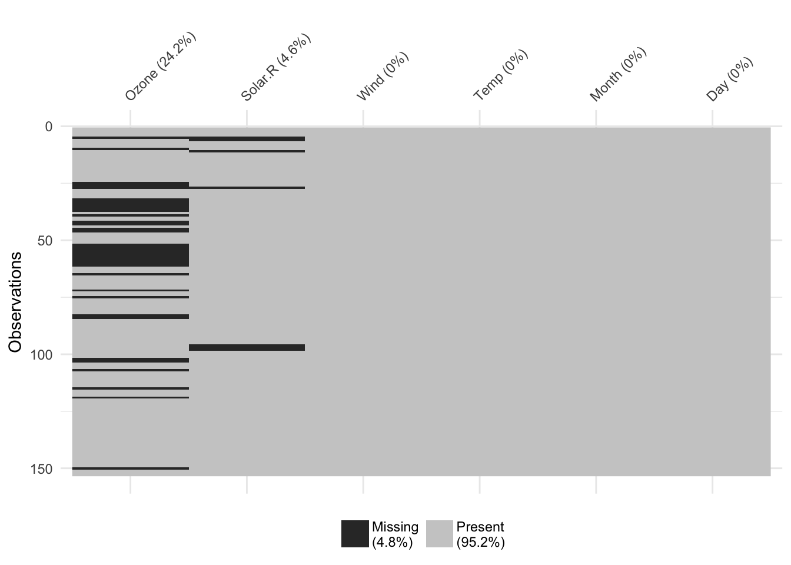
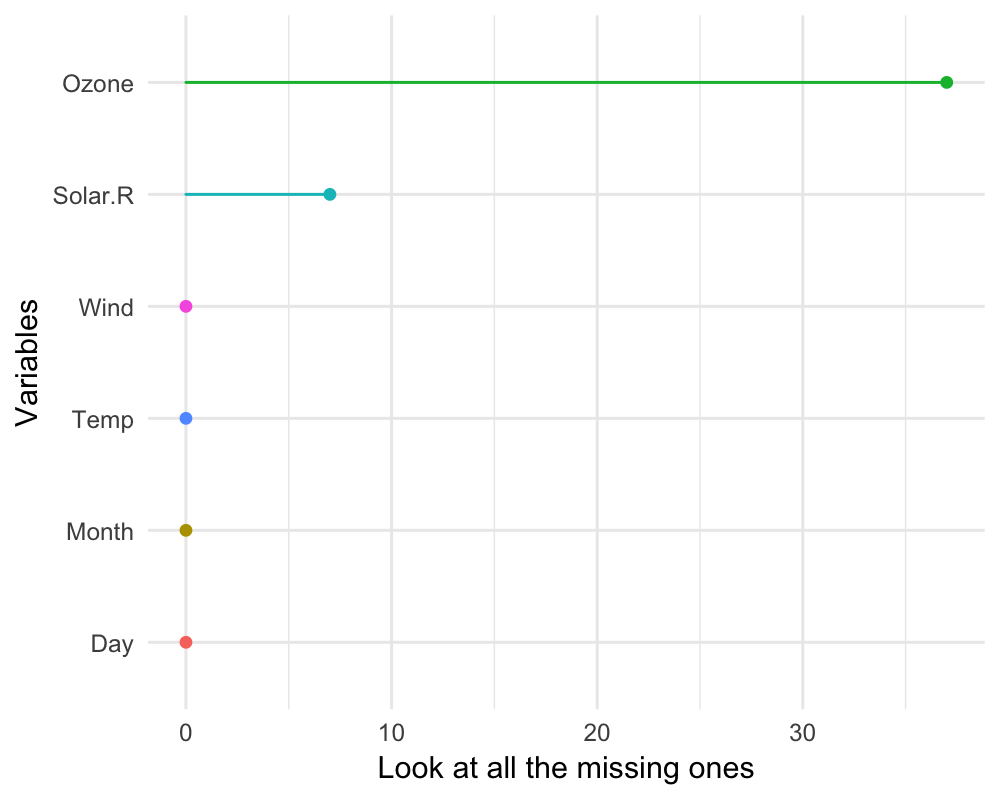

Gallery of Missing Data Visualisations
Nicholas Tierney
2017-08-09
There are a variety of different plots to explore missing data available in the naniar package. This vignette simply showcases all of the visualisations. If you would like to know more about the philosophy of the naniar package, you should read the vignette “Getting Started with naniar”.
A key point to remember with the visualisation tools in naniar is that there is a way to get the data from the plot out from the visualisation.
Getting started
One of the first plots that I recommend you start with when you are first exploring your missing data, is the vis_miss() plot, which is re-exported from visdat.
library(naniar)
vis_miss(airquality)
This plot provides a specific visualiation of the amount of missing data, showing in black the location of missing values, and also providing information on the overall percentage of missing values overall (in the legend), and in each variable.
Exploring Missingness Mechanisms
There are a few different ways to explore different missing data mechanisms and relationships. One way incorporates the method of shifting missing values so that they can be visualised on the same axes as the regular values, and then colours the missing and not missing points. This is implemented with geom_miss_point().
geom_miss_point()
library(ggplot2)
# using regular geom_point()
ggplot(airquality,
aes(x = Ozone,
y = Solar.R)) +
geom_point()## Warning: Removed 42 rows containing missing values (geom_point).
library(naniar)
# using geom_miss_point()
ggplot(airquality,
aes(x = Ozone,
y = Solar.R)) +
geom_miss_point()
# Facets!
ggplot(airquality,
aes(x = Ozone,
y = Solar.R)) +
geom_miss_point() +
facet_wrap(~Month)
# Themes
ggplot(airquality,
aes(x = Ozone,
y = Solar.R)) +
geom_miss_point() +
theme_dark()
General visual summaries of missing data
These
gg_miss_var()
This plot shows the number of missing values in each variable in a dataset. It is powered by the miss_var_summary() function.
gg_miss_var(airquality)
library(ggplot2)
gg_miss_var(airquality) + labs(y = "Look at all the missing ones")
gg_miss_case()
This plot shows the number of missing values in each case. It is powered by the miss_case_summary() function.
gg_miss_case(airquality)
library(ggplot2)
gg_miss_case(airquality) + labs(x = "Number of Cases")
gg_miss_fct()
This plot shows the number of missings in each column, broken down by a categorical variable from the dataset. It is powered by a dplyr::group_by statement followed by miss_var_summary().
gg_miss_fct(x = riskfactors, fct = marital)
library(ggplot2)
gg_miss_fct(x = riskfactors, fct = marital) + labs(title = "NA in Risk Factors and Marital status")
# using group_by
library(dplyr)##
## Attaching package: 'dplyr'## The following objects are masked from 'package:stats':
##
## filter, lag## The following objects are masked from 'package:base':
##
## intersect, setdiff, setequal, unionriskfactors %>%
group_by(marital) %>%
miss_var_summary()## # A tibble: 231 x 4
## marital variable n_missing percent
## <fctr> <chr> <int> <dbl>
## 1 Married smoke_stop 120 91.603053
## 2 Married pregnant 117 89.312977
## 3 Married smoke_last 84 64.122137
## 4 Married smoke_days 73 55.725191
## 5 Married drink_average 68 51.908397
## 6 Married health_poor 67 51.145038
## 7 Married drink_days 67 51.145038
## 8 Married weight_lbs 6 4.580153
## 9 Married bmi 6 4.580153
## 10 Married diet_fruit 4 3.053435
## # ... with 221 more rows
gg_miss_span()
This plot shows the number of missings in a given span, or breaksize, for a single selected variable. In this case we look at the span of hourly_counts from the pedestrian dataset. It is powered by the miss_var_span function
# data method
miss_var_span(pedestrian, hourly_counts, span_every = 3000)## # A tibble: 13 x 5
## span_counter n_miss n_complete prop_miss prop_complete
## <int> <int> <dbl> <dbl> <dbl>
## 1 1 0 3000 0.0000000000 1.0000000
## 2 2 0 3000 0.0000000000 1.0000000
## 3 3 1 2999 0.0003333333 0.9996667
## 4 4 121 2879 0.0403333333 0.9596667
## 5 5 503 2497 0.1676666667 0.8323333
## 6 6 555 2445 0.1850000000 0.8150000
## 7 7 190 2810 0.0633333333 0.9366667
## 8 8 0 3000 0.0000000000 1.0000000
## 9 9 1 2999 0.0003333333 0.9996667
## 10 10 0 3000 0.0000000000 1.0000000
## 11 11 0 3000 0.0000000000 1.0000000
## 12 12 745 2255 0.2483333333 0.7516667
## 13 13 432 2568 0.1440000000 0.8560000gg_miss_span(pedestrian, hourly_counts, span_every = 3000)
# works with the rest of ggplot
gg_miss_span(pedestrian, hourly_counts, span_every = 3000) + labs(x = "custom")
gg_miss_span(pedestrian, hourly_counts, span_every = 3000) + theme_dark()
gg_miss_case_cumsum()
This plot shows the cumulative sum of missing values, reading the rows of the dataset from the top to bottom. It is powered by the miss_case_cumsum() function.
gg_miss_case_cumsum(airquality)
library(ggplot2)
gg_miss_case_cumsum(riskfactors, breaks = 50) + theme_bw()
miss_case_cumsum(riskfactors)## # A tibble: 245 x 3
## case n_missing n_missing_cumsum
## <int> <int> <int>
## 1 1 6 6
## 2 2 6 12
## 3 3 7 19
## 4 4 12 31
## 5 5 5 36
## 6 6 7 43
## 7 7 5 48
## 8 8 4 52
## 9 9 4 56
## 10 10 11 67
## # ... with 235 more rows
gg_miss_var_cumsum()
This plot shows the cumulative sum of missing values, reading columns from the left to the right of your dataframe. It is powered by the miss_var_cumsum() function.
gg_miss_var_cumsum(airquality)
gg_miss_which()
This plot shows a set of rectangles that indicate whether there is a missing element in a column or not.
gg_miss_which(airquality)